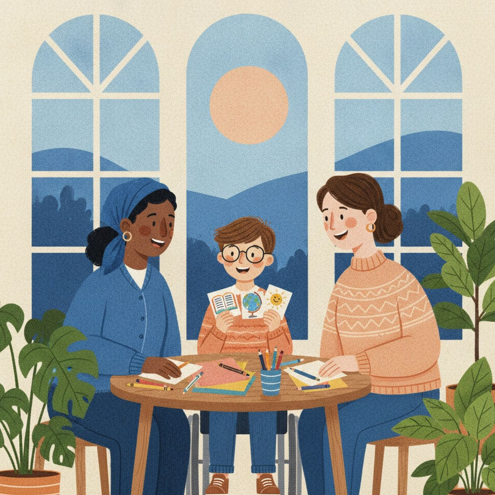

教育支持，从学生本人出发Education support starts with the student
从学生的目标、沟通方式和优势出发：家长文章、美国教育资源入口和自我倡导工具。Starting from the student's goals, communication and strengths: parent articles, U.S. education resources and self-advocacy tools.
具体权利和程序因地而异，请向学区、州教育部门或家长信息中心确认。Rights and processes vary — confirm details with your school district, state education department or Parent Center.

理解行为背后的需要，更早为成年生活做准备Understand the need behind the behaviour — and plan early for adult life
把国内外公开研究和特殊教育政策，整理成家长在日常生活中能实践的文章。
Public research and special-education policy, turned into articles families can put into practice every day.
仅供知识分享，不替代医疗诊断、专业评估或个别化教育建议。For general knowledge only — not a substitute for medical diagnosis, professional assessment or individualized educational advice.
先找到对的入口Start at the right front door
联邦法律IDEA（Individuals with Disabilities Education Act）保障残障学生的教育权利；各州的家长信息中心可帮助家庭了解选择与权利。The federal IDEA (Individuals with Disabilities Education Act) protects students' education rights; each state's Parent Center helps families understand their options and rights.
我们无法保证资格，也不替代学校评估、法律咨询或正式申诉程序。We can't promise eligibility or replace a school evaluation, legal advice or a formal complaint process.
IDEA 家长资源IDEA for parents & families
美国教育部：法规、程序保障和家庭资源。U.S. Dept. of Education: law, safeguards, family resources.
sites.ed.gov/idea各州家长信息中心Find your Parent Center
按州查找家长培训与信息中心。Find your state's Parent Training and Information Center.
parentcenterhub.org外部链接不代表这些机构认可本项目。External links don't imply these organisations endorse MindBridge.
用你习惯的方式表达需要，并有权询问一个安排为什么适合你。Share your needs your way — and ask why an arrangement is right for you.
可以请信任的家长、教师或支持人员陪你一起了解选择。A trusted parent, teacher or support person can help you weigh your options.

会议前，写下这四件事Before a meeting, jot down four things
- 自己擅长的事情What I'm good at
- 遇到的困难What's hard for me
- 已经有效的支持方式Support that already works
- 希望得到的具体帮助The specific help I'd like
如果你关注的是国内的教育路径If you're looking at education pathways in China
从高中走向大学与工作From high school to college and work
学校之后，还有工作与生活After school comes work and life
继续了解就业资源和生活技能。Explore employment resources and life skills.